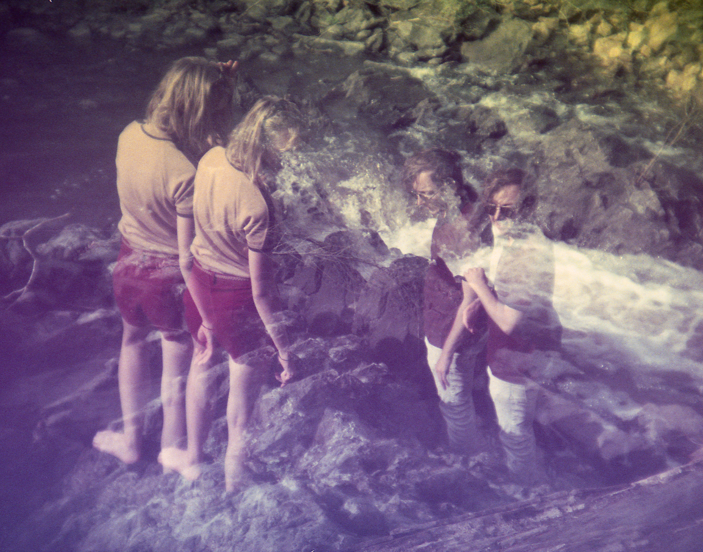
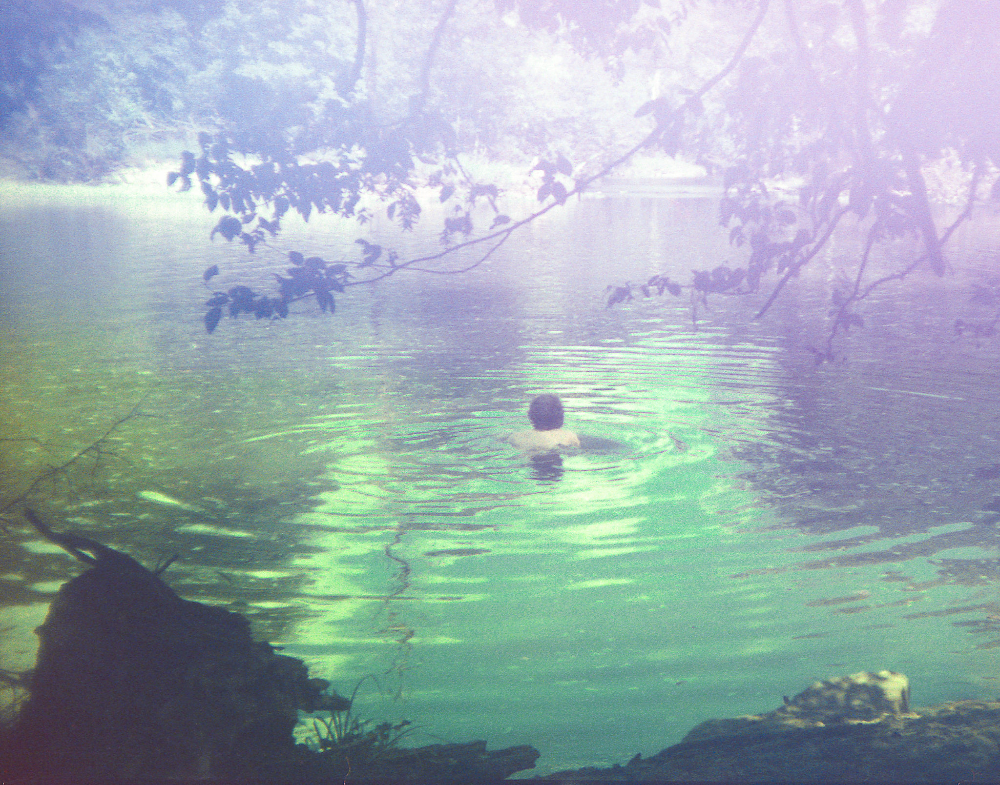

Peter Constantinou
Web Designer, Photographer, Pianist, and Artist
Peter Constantinou is a Durham, NC based web designer and artist.
Featured Projects
View selected projects below. More information can be found at my photography portfolio.
Durham, NC Summer 2019
Exploring experimental film and camera.
Durham, NC Summer 2019
Exploring experimental film and camera.
Work Experience
Product photographer
Sound Pure
2019-2020
Photographed new instruments and products for the online catalog
Education
Warren Wilson College - Asheville, NC
B.A. in fine art, 2016